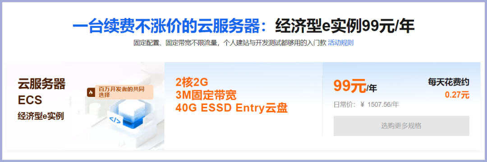
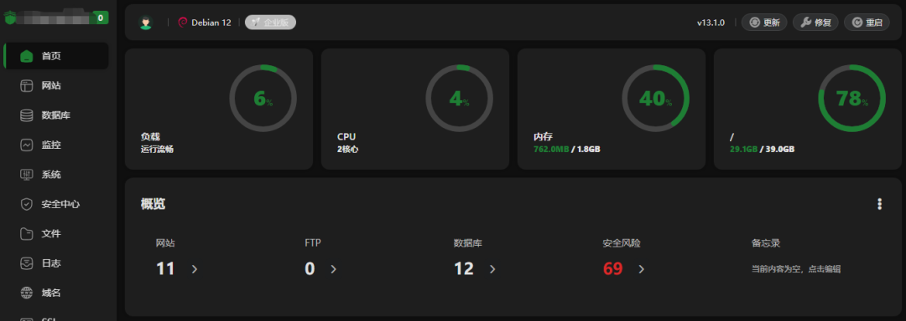
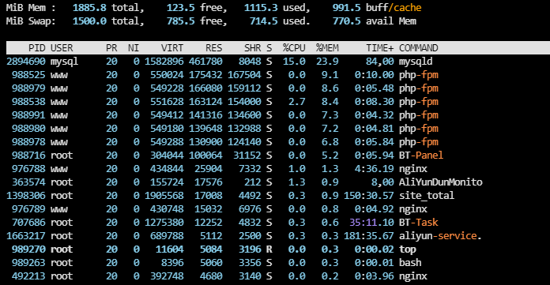
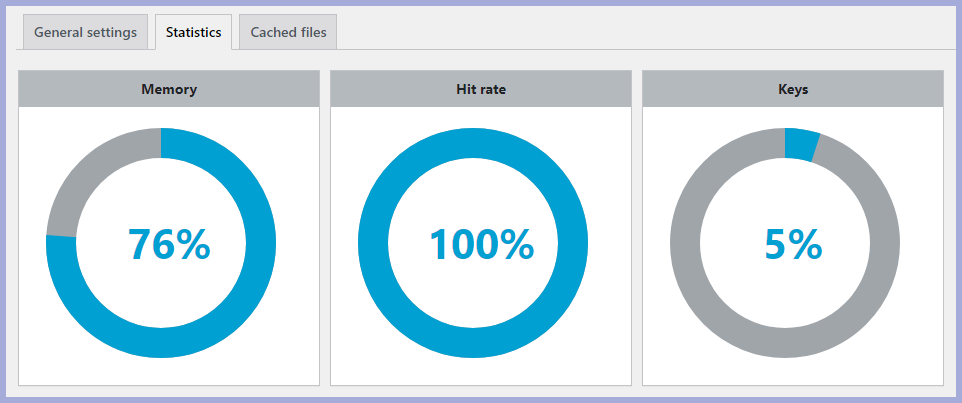

2G内存不大，但会用的人，能把它用出花来。
阿里云99计划那款ECS，2核2G3M，我前几年就买了。
续费了好几次，每次都是99元。活动又延期到2029年3月，看来还能再用几年。

现在买，买完马上续费1次，明年后年还能再续2次。大概能用4年，每年都是99元。
99计划专属页：https://t.aliyun.com/U/uDcdi2
很多人一看配置：2核2G。
然后就划走了。
但你仔细看它的完整参数：
3Mbps固定带宽，不限流量。独立公网IP。续费同价。不限新老用户。ECS弹性云服务器，可升级扩展。
这些加起来，才是它真正的实力。
2G内存放在今天，确实不大。比起那些256GB内存的机器，微不足道，但是也有很多人依然在使用512MB内存的服务器的。
但它的定位本来就是入门级。日常开发、测试、学习，覆盖大部分需求没问题。
这台机器我用了好几年。
装的是宝塔面板，搭的LNMP环境，跑着好几个WordPress网站。

真实访客其实不多，1天估计就几百。
但蜘蛛爬虫是真的多。尤其是现在各种大模型的爬虫，数万甚至数十万的访问量。
所以不优化，内存和CPU照样扛不住。
第一，开启Swap。
这可能会损失一点性能，但必要性非常大。2G物理内存，加上Swap，等于给系统加了层保险，防止内存突然打满直接崩。

第二，关闭Kdump。
Kdump会预留一部分内存做内核崩溃转储。对个人小站来说，这个功能用不上，关掉能释放出被预留的内存。
第三，数据库和缓存层面做优化。
用 Redis 缓存数据，减少数据库查询。PHP开启 OPcache，把编译好的脚本缓存起来，不用每次重新编译。

第四，用WP Super Cache插件。
把页面生成静态HTML缓存起来。访客访问时直接读缓存，不走PHP和数据库，内存和CPU压力大幅下降。
第五，屏蔽垃圾蜘蛛和爬虫。
这是被很多人忽略的一招。那些没有意义的爬虫，不带来流量，只消耗资源。在Nginx配置里加屏蔽规则，能砍掉一大半无效访问。
99元1年，续费不涨价，能用4年。
这个价格，买到的是独立公网IP、不限流量、ECS弹性架构。
2核2G确实不大。但做好优化，它能跑的东西比你想的多。
Swap、关Kdump、Redis、OPcache、页面缓存、屏蔽爬虫。
这几招做完，这台99元的服务器，能稳稳地跑好几年。
别被配置数字骗了。会用，才能榨干它的性价比。